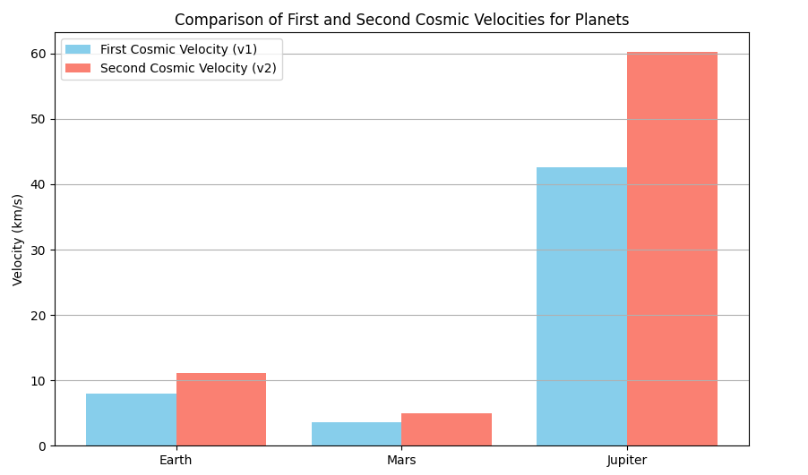
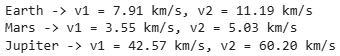
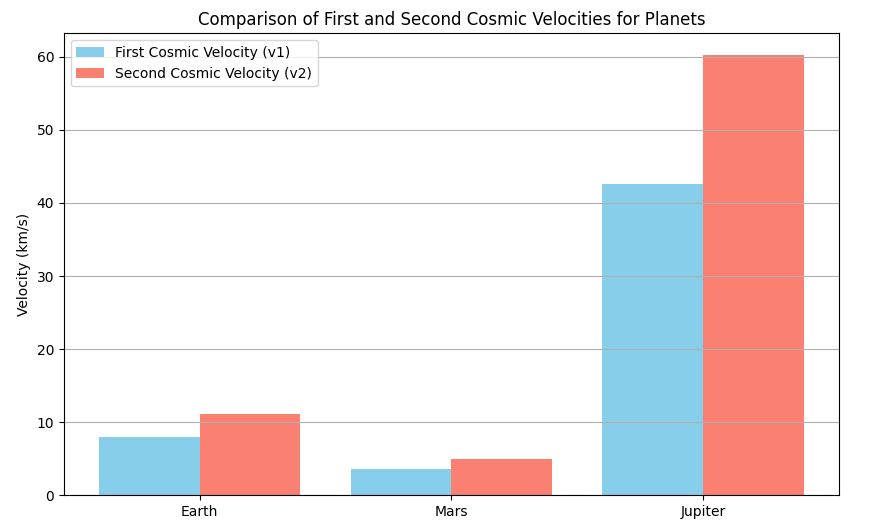
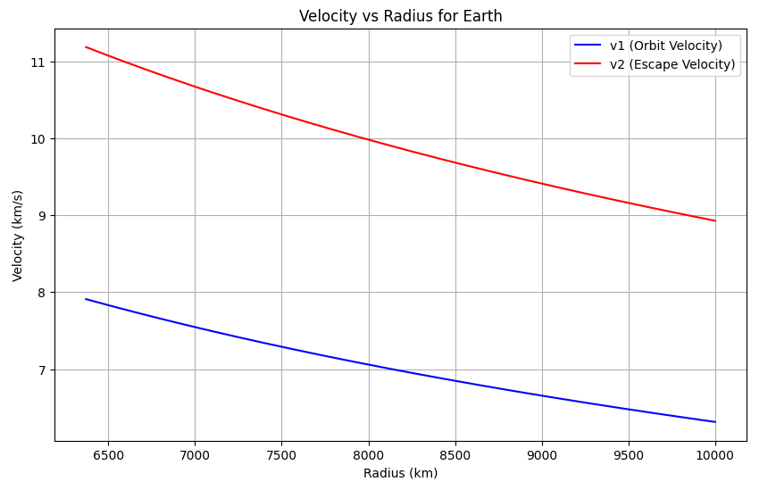
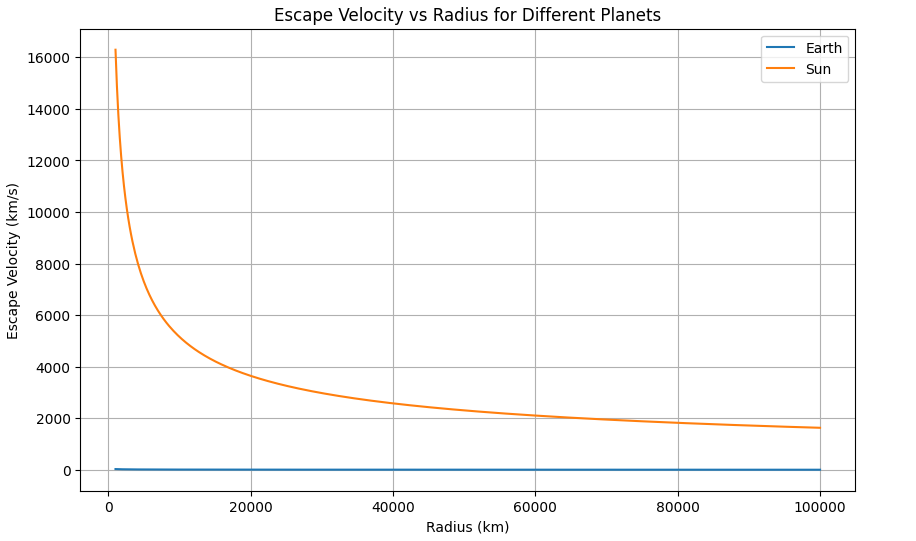
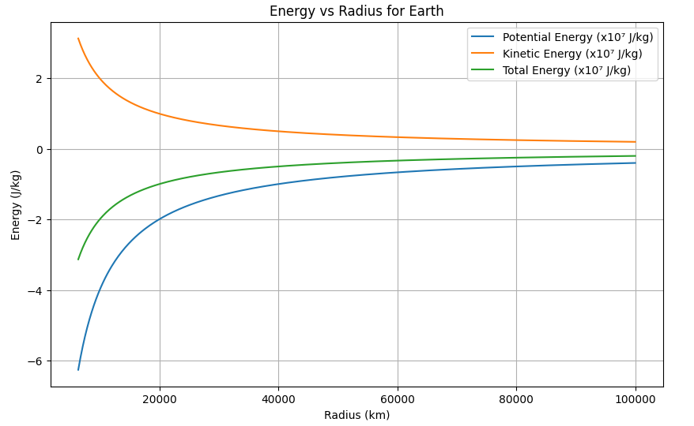

Gravity: Escape Velocities and Cosmic Velocities
1. Introduction and Motivation
The concept of escape velocity is crucial in space exploration:
- How fast must a rocket travel to leave Earth?
- What speed is needed to orbit Earth?
- How much faster to leave the Solar System?
We define: - First Cosmic Velocity: Orbital velocity around a celestial body. - Second Cosmic Velocity: Escape velocity from a celestial body. - Third Cosmic Velocity: Escape velocity from a star system.
2. Theoretical Foundation
2.1 Gravitational Potential Energy
The gravitational potential energy (\(U\)) between two masses:
where: - \(G\) = gravitational constant, - \(M\) = mass of central body, - \(m\) = mass of escaping body, - \(r\) = distance between their centers.
2.2 Kinetic Energy
The kinetic energy (\(K\)) of the moving object:
2.3 Total Mechanical Energy
Total energy (\(E\)) is:
For escape:
3. First, Second, and Third Cosmic Velocities
3.1 First Cosmic Velocity (\(v_1\))
- Speed needed for stable circular orbit around a planet.
- Derive by equating gravitational force and centripetal force:
Simplify:
3.2 Second Cosmic Velocity (\(v_2\))
- Minimum speed needed to escape the planet's gravity.
- Set total mechanical energy to zero:
Thus:
Notice:
3.3 Third Cosmic Velocity (\(v_3\))
- Speed needed to escape the entire solar system from Earth.
- More complex, involves the Sun’s gravity and Earth's motion:
Approximate:
4. Practical Calculations for Different Planets
We will calculate \(v_1\), \(v_2\), \(v_3\) for:
- Earth,
- Mars,
- Jupiter.
5. Computational Modeling
5.1 Constants
import numpy as np
import matplotlib.pyplot as plt
G = 6.67430e-11
masses = {
"Earth": 5.972e24,
"Mars": 6.417e23,
"Jupiter": 1.898e27
}
radii = {
"Earth": 6.371e6,
"Mars": 3.3895e6,
"Jupiter": 6.9911e7
}
v1 = {}
v2 = {}
for planet in masses:
r = radii[planet]
M = masses[planet]
v1[planet] = np.sqrt(G * M / r)
v2[planet] = np.sqrt(2 * G * M / r)
planets = list(masses.keys())
v1_values = [v1[p]/1000 for p in planets]
v2_values = [v2[p]/1000 for p in planets]
x = np.arange(len(planets))
plt.figure(figsize=(10,6))
plt.bar(x - 0.2, v1_values, 0.4, label='First Cosmic Velocity (v1)', color='skyblue')
plt.bar(x + 0.2, v2_values, 0.4, label='Second Cosmic Velocity (v2)', color='salmon')
plt.xticks(x, planets)
plt.ylabel('Velocity (km/s)')
plt.title('Comparison of First and Second Cosmic Velocities for Planets')
plt.legend()
plt.grid(axis='y')
plt.show()

5.2 Escape and Orbital Velocities
# Calculate v1 and v2
v1 = {}
v2 = {}
for planet in masses:
r = radii[planet]
M = masses[planet]
v1[planet] = np.sqrt(G * M / r)
v2[planet] = np.sqrt(2 * G * M / r)
# Print results
for planet in v1:
print(f"{planet} -> v1 = {v1[planet]/1000:.2f} km/s, v2 = {v2[planet]/1000:.2f} km/s")

5.3 Graph: v1 and v2 Comparison
import numpy as np
import matplotlib.pyplot as plt
G = 6.67430e-11
masses = {
"Earth": 5.972e24,
"Mars": 6.417e23,
"Jupiter": 1.898e27
}
radii = {
"Earth": 6.371e6,
"Mars": 3.3895e6,
"Jupiter": 6.9911e7
}
v1 = {}
v2 = {}
for planet in masses:
r = radii[planet]
M = masses[planet]
v1[planet] = np.sqrt(G * M / r)
v2[planet] = np.sqrt(2 * G * M / r)
planets = list(masses.keys())
v1_values = [v1[p]/1000 for p in planets]
v2_values = [v2[p]/1000 for p in planets]
x = np.arange(len(planets))
plt.figure(figsize=(10,6))
plt.bar(x - 0.2, v1_values, 0.4, label='First Cosmic Velocity (v1)', color='skyblue')
plt.bar(x + 0.2, v2_values, 0.4, label='Second Cosmic Velocity (v2)', color='salmon')
plt.xticks(x, planets)
plt.ylabel('Velocity (km/s)')
plt.title('Comparison of First and Second Cosmic Velocities for Planets')
plt.legend()
plt.grid(axis='y')
plt.show()

Graph 1: Orbital vs Escape Velocities
- Earth: \(v_1 \approx 7.9\) km/s, \(v_2 \approx 11.2\) km/s.
- Mars: Lower due to smaller mass.
- Jupiter: Much higher due to massive gravity.
6. Detailed Graphs and Simulations
6.1 Velocity vs Radius for Earth
r_values = np.linspace(6.371e6, 10e6, 500)
v1_earth = np.sqrt(G * masses["Earth"] / r_values)
v2_earth = np.sqrt(2 * G * masses["Earth"] / r_values)
plt.figure(figsize=(10,6))
plt.plot(r_values/1000, v1_earth/1000, label='v1 (Orbit Velocity)', color='blue')
plt.plot(r_values/1000, v2_earth/1000, label='v2 (Escape Velocity)', color='red')
plt.xlabel('Radius (km)')
plt.ylabel('Velocity (km/s)')
plt.title('Velocity vs Radius for Earth')
plt.legend()
plt.grid()
plt.show()

Graph 2: Velocity vs Radius (Earth)
- As radius increases, required velocity decreases.
6.2 Velocity Comparison for Earth, Mars, Jupiter
r = np.linspace(1e6, 1e8, 500)
plt.figure(figsize=(10,6))
for planet in masses:
v_escape = np.sqrt(2 * G * masses[planet] / r)
plt.plot(r/1000, v_escape/1000, label=f'{planet}')
plt.xlabel('Radius (km)')
plt.ylabel('Escape Velocity (km/s)')
plt.title('Escape Velocity vs Radius for Different Planets')
plt.legend()
plt.grid()
plt.show()

Graph 3: Escape Velocities vs Radius
- Jupiter dominates with much higher escape speeds.
6.3 Energy vs Radius for Earth
import numpy as np
import matplotlib.pyplot as plt
G = 6.67430e-11 # m^3 kg^-1 s^-2
M_earth = 5.972e24 # kg
radii = np.linspace(6.371e6, 10e7, 500) # 6371 km (Earth surface) to 10000 km altitude
U = -G * M_earth / radii # Gravitational Potential Energy per unit mass (J/kg)
K = G * M_earth / (2 * radii) # Kinetic Energy per unit mass (J/kg)
E_total = K + U # Total Mechanical Energy
plt.figure(figsize=(10,6))
plt.plot(radii/1000, U/1e7, label='Potential Energy (x10⁷ J/kg)')
plt.plot(radii/1000, K/1e7, label='Kinetic Energy (x10⁷ J/kg)')
plt.plot(radii/1000, E_total/1e7, label='Total Energy (x10⁷ J/kg)')
plt.xlabel('Radius (km)')
plt.ylabel('Energy (J/kg)')
plt.title('Energy vs Radius for Earth')
plt.legend()
plt.grid()
plt.show()

Graph 4: Energy Profiles
- At escape, total energy approaches zero.
7. Space Exploration Applications
- Launch satellites into orbit (first cosmic velocity),
- Send missions to Mars (second cosmic velocity),
- Plan missions to outer planets and beyond (third cosmic velocity).
Without sufficient velocity, rockets will fall back!
8. Frequently Asked Questions (FAQ)
Q1: Why is escape velocity important?
It determines the minimum speed needed to leave a planet.
Q2: Is escape velocity affected by mass of spacecraft?
No, escape velocity depends only on planet's mass and radius.
Q3: How is third cosmic velocity calculated?
By considering both Earth's and Sun's gravitational wells.
Q4: Why is Jupiter’s escape velocity so high?
Jupiter's mass is over 300 times Earth's!
Q5: Does atmosphere affect escape?
Yes, atmospheric drag requires rockets to expend extra energy.